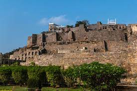

TAJ MAHAL
- Taj Mahal is located in Agra
- Taj Mahal was built in 1632
by the Mughal emperor Shah Jahan.
- Taj Mahal is made of white marble.
RED FORT
- Red Fort,or 'Lal Qila',
was built by the
Mughal Emperor Shah Jahan.
- It is made of red sandstones
and was earlier
coated with precious jewels.
- The national flag is hoisted
on its
top on Independence Day.
GATEWAY OF INDIA
- The Gateway of India is a historic
monument located in Mumbai, India. - It was built during the British colonial
era and was completed in 1924. - It is considered the symbol of Mumbai.
16-Jan-2023

LOTUS TEMPLE
- Lotus temple is located in New Delhi, India.
- The temple was founded on the
basis of the Bahai faith. - It was built in 1986.

GOLCONDA FORT
- The outer fort occupies an area
of three square kilometers. - It is 4.8 kilometers in length.
- It was originally known as Mankal
CHARMINAR
- Charminar is a historic and
religious monument located in
Hyderabad, Telangana. - It is built in Indo-Islamic style of architecture.
QUTUB MINAR
-
It is the tallest minaret
made of brick in the world. - Qutub Minar is 72.5 metres high.
- It has five distinct storeys
with a projected balcony.

KHAJURAHO TEMPLE
- The temples at Khajuraho were built
during the Chandella dynasty.
- It reached its apogee between 950 and 1050.
- They strike a perfect balance
between architecture and sculpture.
GOLDEN TEMPLE
- The Golden Temple is also called
“Darbar Sahib” or “Harmandar Sahib.” - The Golden Temple is one of the
worship places for the Indian Sikhs. - It is situated in Amritsar, Punjab of India.